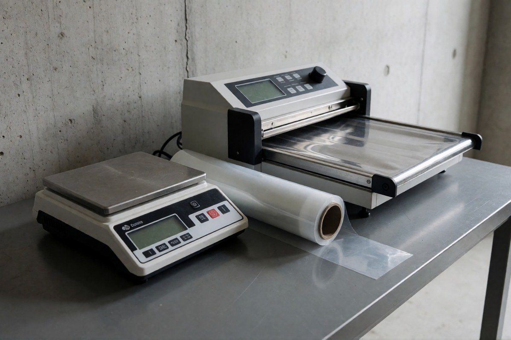

Sicilia · 26 novembre 2026
Catania, pistola carica nel borsello e quattro chili di cocaina in casa

Un ventenne è stato arrestato dalla polizia a San Cristoforo durante i controlli del territorio. Nel borsello una semiautomatica con il colpo in canna, in casa oltre quattro chili di cocaina, munizioni e il materiale per confezionare le dosi.
di Franco Zanghì
Una pistola con il colpo in canna nel borsello, e in casa più di quattro chili di cocaina. A Catania la polizia ha arrestato un ragazzo di vent'anni. La notizia è stata data giovedì 26 novembre 2026 dall'ANSA, su comunicazione della Polizia di Stato.
È successo nel quartiere di San Cristoforo, durante i controlli del territorio. Gli agenti della sezione Falchi della squadra mobile lo hanno notato fermo accanto a uno scooter, vicino all'ingresso di un'abitazione. All'arrivo delle pattuglie il giovane si è innervosito, e il nervosismo è stato il motivo del controllo.
Nel borsello che portava a tracolla c'era una pistola semiautomatica calibro 6,35, con il colpo già in canna e altre cinque cartucce nel caricatore. Il dettaglio è riferito dal quotidiano La Sicilia.
Che cosa c'era in casa
La perquisizione nell'appartamento ha dato il resto. In sala da pranzo, dentro uno zaino nero appoggiato su una sedia, c'erano quattro panetti di cocaina: 4 chili e 274 grammi.
Nell'armadio della stessa stanza, due buste sottovuoto con le munizioni: nove cartucce calibro 38 special e diciotto calibro 6,35, lo stesso della pistola. In un altro armadio, all'ingresso, altri 81 grammi di cocaina.
Con la droga anche tutto il necessario per confezionare le dosi: due bilancini di precisione, una macchina per il sottovuoto, buste di plastica e pellicola. In totale oltre quattro chili e tre etti di cocaina.
San Cristoforo è uno dei quartieri storici di Catania, a sud del centro, dove negli ultimi mesi la questura ha intensificato i servizi con pattuglie e posti di controllo. Operazioni come questa nascono spesso così: non da un'indagine lunga, ma da un controllo di strada e da un dettaglio fuori posto.
Il provvedimento
Il pubblico ministero di turno ha disposto il carcere, e il ventenne è stato portato nella casa circondariale di piazza Lanza. Fino a una sentenza definitiva per lui vale la presunzione d'innocenza.
Quattro chili di cocaina in un appartamento di quartiere non sono una dose sbagliata né un piccolo spaccio: sono un magazzino. E una pistola pronta a sparare nel borsello, in un quartiere dove vivono famiglie e vanno bambini a scuola, è il vero dato di questa storia.
Il quartiere, del resto, chiede soprattutto questo: non titoli sul degrado, ma presenza. Un magazzino di droga chiuso è una cosa che si misura, e che a San Cristoforo si vede.
Fonti
- ANSA Sicilia, «Ha 4 kg di cocaina e una pistola, arrestato a Catania», 26 novembre 2026
- La Sicilia, per il dettaglio dell'arma e del materiale sequestrato, 26 novembre 2026
- MeridioNews, «Catania, cocaina in casa e pistola nel borsello: arrestato 20enne», 26 novembre 2026
- LiveUnict, «Catania, pistola pronta a sparare e oltre 4,3 chili di cocaina in casa», 26 novembre 2026
- Quotidiano di Sicilia, «Mega blitz della Polizia a San Cristoforo: sequestrati quattro chili di cocaina», 26 novembre 2026
- SiciliaWeb, «Pistola pronta a sparare, munizioni e droga: un arresto a San Cristoforo», 26 novembre 2026
L'arresto è in attesa di convalida e i fatti sono la ricostruzione della polizia giudiziaria. Il nome del ventenne non è stato reso pubblico dalle fonti consultate e non viene cercato qui. Le testate indicano il peso della droga con arrotondamenti diversi, fra quattro chili e oltre quattro chili e tre etti: qui si riportano le cifre analitiche dell'ANSA e de La Sicilia. L'indirizzo esatto dell'abitazione non viene riportato.